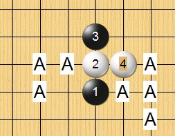
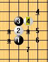

山口规则打点讨论
#1 山口规则打点讨论 作者：潇洒 发表时间：2008-12-30 10:44:02
2009年的世锦赛 采用 山口规则
那我们来讨论下 26 个开局最强的4可以给多少个打点
最后的打点黑白可战
哪个开局有哪个4能给出比最强4还少的可战打点
最好发个图说明下这些4的打点
#2 Re:山口规则打点讨论 作者：潇洒 发表时间：2008-12-30 10:47:03
如何我们中国人国内率先研究山口规则
那么我们将在世锦赛上研究占上优势
所以大家有什么建议 或 想法
都可以发到论坛上来
#3 Re:山口规则打点讨论 作者：潇洒 发表时间：2008-12-30 10:51:44
=======上图对应的爱五子棋谱代码如下，以便你拆解：========
h8i9i7g9
======================================================
=======上图对应的爱五子棋谱代码如下，以便你拆解：========
h8i9i7h6
======================================================
=======上图对应的爱五子棋谱代码如下，以便你拆解：========
h8i9i7h7
======================================================
=======上图对应的爱五子棋谱代码如下，以便你拆解：========
h8i9i7j6
======================================================
#4 Re:山口规则打点讨论 作者：潇洒 发表时间：2008-12-30 10:52:38
大家可以从浦月这几个4的打点开始讨论#5 Re:山口规则打点讨论 作者：潇洒 发表时间：2008-12-30 10:54:40
=======上图对应的爱五子棋谱代码如下，以便你拆解：========
h8h9i9i8
======================================================
=======上图对应的爱五子棋谱代码如下，以便你拆解：========
h8h9i9j10
======================================================
=======上图对应的爱五子棋谱代码如下，以便你拆解：========
h8h9i9j8
======================================================
=======上图对应的爱五子棋谱代码如下，以便你拆解：========
h8h9i9i10
======================================================
#6 Re:山口规则打点讨论 作者：王志伟123 发表时间：2008-12-30 15:54:19
是先手开局，后手放45先手选择是否交换的那个吗。#7 Re:山口规则打点讨论 作者：江南新绿 发表时间：2008-12-30 16:28:21
假后方比较有压力。原因在于假先方放第三手，然后可以叫一个5、6打。完全不指望开局阶段的优势。这样假后方会更容易中骗招。
#8 Re:山口规则打点讨论 作者：潇洒 发表时间：2008-12-30 18:42:58
山口规则
1、第一位棋手下前三手棋（RIF标准规则规定的26种开局之一），同时提议五手打点的数目；
2、第二位棋手决定是交换还是保持执白；
3、下第5手时，黑方必须提供第一位棋手在开局时所提议的数目的五手打点；
4、白方从中选择一点，并下第6手棋；
5、按RIF标准规则继续（黑棋有禁手）。
#9 Re:山口规则打点讨论 作者：潇洒 发表时间：2008-12-30 18:55:15
回7楼 如果抽空研究26个开局都几个4的打点 假后方不见得吃亏#10 Re:山口规则打点讨论 作者：Solmyr 发表时间：2008-12-30 19:04:15
 这个研究的强度貌似微大了一点啊~而且大到可怕的地步！
这个研究的强度貌似微大了一点啊~而且大到可怕的地步！
#11 Re:山口规则打点讨论 作者：江南新绿 发表时间：2008-12-30 20:12:08
黑优的开局，8打几乎是败了。7打还可以。三打几乎可以必胜。
打点这么多。即使按照棋谱走棋也不会必胜。
研究个啥
#12 Re:山口规则打点讨论 作者：潇洒 发表时间：2008-12-30 20:21:37
就研究打点 可战 具体罗列出来 工作量不会很大吧
不研究 比赛靠蒙？？？
#13 Re:山口规则打点讨论 作者：潇洒 发表时间：2008-12-30 20:22:47
一般不会有七打吧 四五打都白优了#14 Re:山口规则打点讨论 作者：wrwak 发表时间：2008-12-30 20:34:26
看谁开局啦 开局优势
#15 Re:山口规则打点讨论 作者：潇洒 发表时间：2008-12-31 10:32:51
假后方如果 把26个开局的强4的打点都研究过 不见得处于劣势#16 Re:山口规则打点讨论 作者：失落刀 发表时间：2008-12-31 11:35:01


帮江南发图
#17 Re:山口规则打点讨论 作者：风铃 发表时间：2009-1-11 20:53:58
行棋至白4的时候已经决定是否交换，此时白方选择的白4自然是：黑胜（及平衡）的5手打点最少的一个白4。由此可看出假先方提出的打点数不会高于这个4下的“平衡点数”。也既是：任何开棋，假先方提出的打点数必不能大于此开棋下所有白4中“平衡点数”最小的一个白4下的平衡点，否则将吃亏；或者蔑视对手。
对于假后方，若不知道某开棋的所有白4应对的基本打点顺序则很危险：如假先方开出花月并指定3个打点。假后方若不交换则必败，交换而不知道打点的话，打出个必败或者就算是平衡点就很吃亏了。
#18 Re:山口规则打点讨论 作者：堇色 发表时间：2009-1-22 23:40:58
这个靠一个人或者几个人短时间内是很难研究出结果的
有些开局的白弱4只有两个打点（新月就有一个弱4，两打可胜，其他打点全必败）
如果先手方猜3个打点的话 这个开局必然要所有的白4必须第3个打点可以下 否则为骗局
也就是说 需要排除所有开局的所有白4的最少打点（即2打） 研究为可用
最后也就是说 这个规则要求必须对五手两打点非常熟悉 并且在这个基础上增加一些可战的变化量
实际的研究量并没有那么大。。。 但是需要对五子棋的深入研究才行
［ 有志青年 于 2009-1-23 8:47:13 时奖励此帖[金币加 20 威望加1］
#19 Re:山口规则打点讨论 作者：堇色 发表时间：2009-1-23 0:08:15
山口规则猜想
比如我开某个开局 要3个打点 假设之前研究 这个开局的某个4手只有两个打点（即使这个4很弱） 并没有3打 那么我开这个开局如果对手换掉 我下出这个4后对手给不出3打 （给出即为必败） 那就直接轻松取得胜利
如果对手精通这个开局并且做了研究 知道这个开局某个4手只有两打点 但是我要了3个打点对手并不交换 实际上我也不能给出第3个打点 那么对手不换而我要的打点并不成立 也就直接宣告结束
这样来理解的话 实际上的研究量是很小的 不过需要耗费很多的精力是真的
依照步骤 第一个研究点即为哪些开局有一个4只有两打点 那么这个开局就只能下RIF规则下的山口规则
用排除法 其实是很简单就可以排除很多开局的
比如长星开局 必然只能要2个打点 不可能要3个打点 依次类推
最后可能只留下个别开局能给出3打或者4打 （某些弱4只有两个打点）
理论上分析 黑1-3手距离一格的所有开局 均最多要2个打点（否则一些弱白4黑可能给不出第3个必胜点)
黑1-3手相贴但是远离白棋斜指的开局可能也只能要2个打点（斜月竖4）（松月竖4）浦月可能也有
而黑1-3手都与白4相贴的开局或者包围白4的开局（云月 花月 寒星 疏星 ）可能会存在所有的白4可能至少都有3个甚至更多个打点可以下
因此猜想 山口规则的研究下 可以下3打（或者以上）的开局只存在花月 云月 寒星等1-3短开局
至少要掌握所有开局的五手两打点
并且掌握所有非3打开局至少一个白4的3打必败点
这样看来 山口规则至少可以让比赛的水平更高一层 原因在于这个规则会要求参赛者的五手两打基础更高
［ 有志青年 于 2009-1-23 8:47:02 时奖励此帖[金币加 20 威望加1］
#20 Re:山口规则打点讨论 作者：堇色 发表时间：2009-1-23 0:23:19
瑞星强白4只存在2打 新月有个4只存在2打 长星山口规则也别想变疏星了 也只有2打 山岚名月理论上想山口规则下只能下2个打点 这几个开局目前RIF规则已经可以给出明确的研究结果的了。。。
#21 Re:山口规则打点讨论 作者：越狱行辕 发表时间：2009-1-25 16:15:54
很是迷糊
#22 Re:山口规则打点讨论 作者：屏蔽 发表时间：2009-2-27 23:30:27
稍微研究下倒是没什么……
16楼什么状况？
引用：
山口规则和RIF规则本质区别，在于规定五手打点的数目，也就是要求在各个不同的白4下找出第一个平衡点的序号，这些序号的最小值就是比较合适的一个打点数；特别地，如果所有白4形成的局面下这个平衡点序号之后的那个选点依然为平衡的话，这个打点数还可以依次递增，最终确定的合理打点数是一个范围，在这个范围内保证黑白双方在一个可以接受的局面下开始对弈（考试局当然另当别论）。我随便举个例子，不针对任何开局：（胜负对于黑棋而言）打点序号 白4（1） 白4（2） 白4（3） 白4（4） 白4（5） 白4（6）
1 胜 胜 胜 胜 胜 胜
2 胜 胜 平平 胜 胜
3 平 平 平 平 平 平
4 负 平 平 负 平 平
5 负 负 平 负 平 负
6 负 负 负 负 平 负
参见上表，我希望大家能够理解我的意思：在白4（3）和白4（4）的第二打点出现了平衡局面（广义的，双方可战就行，下同），在白4（1）和白4（4）的第四打点出现了必败局面。因此合理的打点数不小于2，小于4，即2或3。细细分析：如果选择1个打点，则假后方必定交换，白4无论如何走，黑棋都可以选择必胜点，这于假先方当然不好（因为交换过了），身为打点选择方的假先方当然不会这样做出于自己不利的事情；如果选择2个打点，不论是否交换，白棋都可以走白4（3）或白4（4），保证黑棋至少走出一个平衡点，双方可战；选择三个打点的话就什么都不用考虑了；选择4个或以上打点的话，假后方必定不换，然后走白4（1）或白4（4），这样黑棋必定至少打出一个必败点，假先方同样不会这么做的。
以上是我以前写过的理论部分，大家可以参考下，问题应该不大。
应用到实际研究中就麻烦咯……
#23 Re:山口规则打点讨论 作者：nara 发表时间：2009-4-2 18:25:07
楼上的还真专业啊.呵呵.来学习了!
#24 Re:Re:山口规则打点讨论 作者：屏蔽 发表时间：2009-4-5 21:15:29
引用：
原文由 堇色 发表于 2009-1-23 0:23:19 :瑞星强白4只存在2打 新月有个4只存在2打 长星山口规则也别想变疏星了 也只有2打 山岚名月理论上想山口规则下只能下2个打点 这几个开局目前RIF规则已经可以给出明确的研究结果的了。。。
现在瑞星的结论最明确了，就俩
彗星似乎几个都白必胜
流星一打、长星一打可以看下
其他的还没仔细弄
黑优局，尤其是连，似乎弄到四个都没问题。
花月，原则上5-6个大概差不多有些进入可战的阶段，4个就黑必胜。
#25 Re:Re:Re:山口规则打点讨论 作者：江南新绿 发表时间：2009-4-5 21:21:47
=======上图对应的爱五子棋谱代码如下，以便你拆解：========
h8h9i9i8h7
======================================================
发一个给屏蔽杀一下
#26 Re:Re:Re:Re:山口规则打点讨论 作者：屏蔽 发表时间：2009-4-6 8:53:27
引用：
原文由 江南新绿 发表于 2009-4-5 21:21:47 :
=======上图对应的爱五子棋谱代码如下，以便你拆解：========
h8h9i9i8h7
======================================================发一个给屏蔽杀一下
这个——
=======上图对应的爱五子棋谱代码如下，以便你拆解：========
h8h9i9i8h7g10j7g9g8e10
======================================================
这个是必胜的
=======上图对应的爱五子棋谱代码如下，以便你拆解：========
h8h9i9i8h7g10f11j10j7i10h10j11k12j13j12i12h11h13k10i13
======================================================
上次在空间里讨论这个7，8之后有人说是平衡，但要考虑防点的话，总要将5利用上，否则白棋花月必胜了，有两种主要思路：第一种如上图，利用5来进攻，可是白棋直接追胜了。
利用5来防守的话，就是考虑到5限制了J9-K10的连接，那么9-J9/K10应该都不强，则如下防守是第一想法：
=======上图对应的爱五子棋谱代码如下，以便你拆解：========
h8h9i9i8h7g10f11j10i10k10
======================================================
如上图，如果没有5，黑白颜色对调的话，10后的形状是必胜，但是由于有了5，白棋的VCT消失，这表示黑棋可以进攻了，于白棋不好，或许白棋应该考虑更为开阔、富有连接性和确定的VCT手段的进攻方式，如果弄得好的话我觉得优势还能延续。
刚才又想到了反击的方式：似乎黑棋很强
=======上图对应的爱五子棋谱代码如下，以便你拆解：========
h8h9i9i8h7g10f11j10f9
======================================================
这个9强，9-F10似乎稍弱，但是白棋也不好受吧
其他情况：这个8（或8-g8）放跑了1-3的活二，黑棋又有了以攻为守的选择，可能更加复杂多变
=======上图对应的爱五子棋谱代码如下，以便你拆解：========
h8h9i9i8h7g10f11i10
======================================================
具体的我也没怎么想嗯，请教。
#27 Re:Re:Re:Re:山口规则打点讨论 作者：江南新绿 发表时间：2009-4-6 9:28:00
http://www.renju.net.ru/showboard.php?game=20706 贴一盘实战，白棋并不存在简单必胜。虽然黑棋 最后是输了。
#28 Re:Re:山口规则打点讨论 作者：江南新绿 发表时间：2009-4-6 9:37:59
引用：
原文由 堇色 发表于 2009-1-23 0:23:19 :瑞星强白4只存在2打 新月有个4只存在2打 长星山口规则也别想变疏星了 也只有2打 山岚名月理论上想山口规则下只能下2个打点 这几个开局目前RIF规则已经可以给出明确的研究结果的了。。。
这个4的话就还原瑞星了。有其他好4不
#29 Re:Re:Re:山口规则打点讨论 作者：屏蔽 发表时间：2009-4-6 9:55:12
引用：
原文由 江南新绿 发表于 2009-4-6 9:37:59 :引用：
原文由 堇色 发表于 2009-1-23 0:23:19 :瑞星强白4只存在2打 新月有个4只存在2打 长星山口规则也别想变疏星了 也只有2打 山岚名月理论上想山口规则下只能下2个打点 这几个开局目前RIF规则已经可以给出明确的研究结果的了。。。
这个4的话就还原瑞星了。有其他好4不
这个都能4个吧
感觉只要白棋两个子不是连在一起的，打点都是一大堆。
#30 Re:山口规则打点讨论 作者：wrwak 发表时间：2009-4-6 21:13:50
研究太深没有必要知道下基本结论和应法就可以了 加强计算力和棋感更重要
#31 Re:山口规则打点讨论 作者：屏蔽 发表时间：2009-4-8 0:45:59
反正以我目前的思路，感觉假后方好走。#32 Re:山口规则打点讨论 作者：失落刀 发表时间：2009-5-25 18:11:36
=======上图对应的爱五子棋谱代码如下，以便你拆解：========
h8i9i7g9j7o1j8o2j9o3h9
======================================================
浦月这个4有4个黑必胜点。
#33 Re:山口规则打点讨论 作者：失落刀 发表时间：2009-5-25 18:43:32
引用：这样的话需要对每个4（目测不非常弱）可以给几个5来进行研究了吧？是不是这样子？
原文由 潇洒 发表于 2008-12-30 10:44:02 :2009年的世锦赛 采用 山口规则
那我们来讨论下 26 个开局最强的4可以给多少个打点
最后的打点黑白可战
哪个开局有哪个4能给出比最强4还少的可战打点
最好发个图说明下这些4的打点
#34 Re:山口规则打点讨论 作者：失落刀 发表时间：2009-5-25 19:11:49
浦月局哪个4或者哪几个4可以给出最少的可战打点？此时有哪几个可战打点？
对每一个开局都这样询问，就是山口规则的入门要求吧？
比RIF规则难度大多了。
#35 Re:山口规则打点讨论 作者：岳麓小棋后 发表时间：2009-5-25 19:13:02
这也正是山口的乐趣所在#36 Re:山口规则打点讨论 作者：岳麓小棋后 发表时间：2009-5-25 19:14:14
再说了不鲜见的3打、4打必胜中也能埋几路大骗的，所以呢实战自由度在一定程度上就更大了#37 Re:山口规则打点讨论 作者：失落刀 发表时间：2009-5-25 19:20:28
嗯，很不错的规则，对棋手的要求高了很多。这个规则使用个10年怕是没有多大问题吧？#38 Re:山口规则打点讨论 作者：失落刀 发表时间：2009-5-25 19:56:43
山口规则打点汇总（根据前面讨论，不敢保证正确，欢迎批评指正）
瑞星2打
新月2打
长星2打
山月岚月名月2打
游星彗星一打白必胜，山口规则下无法开。
#39 Re:山口规则打点讨论 作者：王小 发表时间：2009-5-25 21:06:52
想下长星 估计是一打吧，你说两打 别个很可能变疏星 或者 流星，呵呵#40 Re:山口规则打点讨论 作者：lijeki 发表时间：2009-5-25 21:57:03
进度很快，已经解决8个开局了，还剩下18个开局，期待这些开局的结论
#41 Re:山口规则打点讨论 作者：白点黑点 发表时间：2009-6-2 0:04:43
看看无语，再看看#42 Re:Re:山口规则打点讨论 作者：sonix 发表时间：2009-6-2 8:39:30
引用：请教岚月哪个4只有2打了，名月是说立2的四吗，3打终结了？
原文由 失落刀 发表于 2009-5-25 19:56:43 :山口规则打点汇总（根据前面讨论，不敢保证正确，欢迎批评指正）
瑞星2打
新月2打
长星2打
山月岚月名月2打
游星彗星一打白必胜，山口规则下无法开。
#43 Re:Re:山口规则打点讨论 作者：江南新绿 发表时间：2009-6-2 8:55:18
引用：新月3打，可以的参考论坛战的棋谱，不知道哪个4最强些。长星传说白棋2打概念胜，可以参考以往email比赛棋谱，山岚名没有见到最强4也不太敢说有共识。
原文由 失落刀 发表于 2009-5-25 19:56:43 :山口规则打点汇总（根据前面讨论，不敢保证正确，欢迎批评指正）
瑞星2打
新月2打
长星2打
山月岚月名月2打
游星彗星一打白必胜，山口规则下无法开。
#44 Re:山口规则打点讨论 作者：淡红的秋樱 发表时间：2009-6-7 23:06:48
=======上图对应的爱五子棋谱代码如下，以便你拆解：========
h8h9i9i8h6g7
======================================================
这个变化可下的超多。白棋有没有强6，或者黑棋有什么强7的。
#45 Re:山口规则打点讨论 作者：游戏人间 发表时间：2009-6-8 9:47:24
山岚名月的只有两打的白4是哪个啊。。。#46 Re:Re:山口规则打点讨论 作者：屏蔽 发表时间：2009-6-10 1:50:06
引用：
原文由 游戏人间 发表于 2009-6-8 9:47:24 :
山岚名月的只有两打的白4是哪个啊。。。
据说：每次看到这个我就想起菜农
=======上图对应的爱五子棋谱代码如下，以便你拆解：========
h8h9g6i10
======================================================
岚月名月只能打俩？不太信。
#47 Re:Re:山口规则打点讨论 作者：屏蔽 发表时间：2009-6-10 1:52:09
引用：
原文由 淡红的秋樱 发表于 2009-6-7 23:06:48 :
=======上图对应的爱五子棋谱代码如下，以便你拆解：========
h8h9i9i8h6g7
======================================================这个变化可下的超多。白棋有没有强6，或者黑棋有什么强7的。
这个确实……名人战上下的时候感觉很有前途。XD
#48 Re:山口规则打点讨论 作者：魔铃 发表时间：2009-6-11 11:01:34
首页链接的 泰山和中村的名月 应该是3打#49 Re:山口规则打点讨论 作者：棋元道 发表时间：2012-8-6 3:13:34
#50 Re:山口规则打点讨论 作者：屏蔽 发表时间：2012-8-6 7:55:48
终结者可以杀 未验证。
#51 Re:山口规则打点讨论 作者：棋元道 发表时间：2012-8-6 14:43:41

#52 Re:屏蔽【==Re:Re:山口规则打点讨论==】 作者：aabb 发表时间：2012-8-7 0:05:34
引用：
原文由 屏蔽 发表于 2009-6-10 1:50:06 :引用：
原文由 游戏人间 发表于 2009-6-8 9:47:24 :
山岚名月的只有两打的白4是哪个啊。。。据说：每次看到这个我就想起菜农
=======上图对应的爱五子棋谱代码如下，以便你拆解：========
h8h9g6i10
======================================================岚月名月只能打俩？不太信。

#53 Re:失落刀【==Re:山口规则打点讨论==】 作者：夏添 发表时间：2012-8-7 2:02:17
我的看法：
是否存在某种开局，在RIF规则下2打平衡；
但实际上，不光2打平衡，3打也是平衡的；
所以不能因为RIF规则下的研究就盲目的中断山口规则的研究。
#54 Re:山口规则打点讨论 作者：棋元道 发表时间：2012-8-8 23:40:17